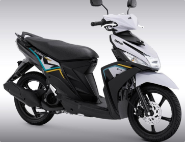

Cara Merawat Motor Matic dengan Benar!
Selasa, 19 April 2022 Tahukah kamu ternyata merawat motor matic dapat dilakukan dengan
mudah loh. Tahukah
kamu ternyata merawat motor matic dapat dilakukan dengan mudah loh. Tahukah kamu ternyata merawat motor
matic dapat dilakukan dengan mudah loh. Tahukah kamu ternyata merawat motor matic dapat dilakukan dengan
mudah loh. Tahukah kamu ternyata merawat motor matic dapat dilakukan dengan mudah loh.
Tahukah kamu ternyata merawat motor matic dapat dilakukan dengan mudah loh. Tahukah kamu ternyata
merawat motor matic dapat dilakukan dengan mudah loh. Tahukah kamu ternyata merawat motor matic dapat
dilakukan dengan mudah loh.